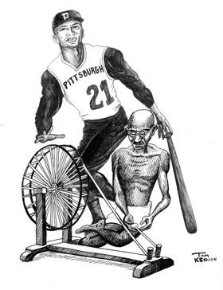
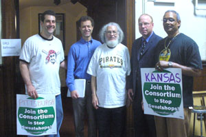

Submitted on Sat, 07/11/2009 - 12:14pm
Printed in the July 11, 2009 edition of the Pittsburgh Post Gazette
Onorato's inaction
When the first agreement consolidating city and county procurement functions was moved in 2004, County Council jumped to ensure that it would not undermine the city's ordinance prohibiting the procurement of apparel made in sweatshops. County Manager Jim Flynn assured council that the administration could implement an effective policy. The Onorato administration has failed to do so.
Proud universities like Carlow, Duquesne and Carnegie Mellon use the same standards as those codified by the county to define sweatshop working conditions and monitor their collegiate licensees. The Pittsburgh Anti Sweatshop Community Alliance has presented worker testimony to the county administration from workers sewing clothes in sweatshops for companies from which the county procures. Some of those companies are Gildan, Hanes and Rocky Brands, and, of course, these companies vigorously reject the validity of their workers' testimony.
Submitted on Sun, 06/21/2009 - 1:23pm
CAPTION FOR PHOTO
Submitted on Wed, 04/29/2009 - 9:04am
 Ten people from Pittsburgh traveled to Baltimore on April 18, 2009
for a B’More Fair and a Human Rights March hosted by the United Workers
Association (UWA). The United Workers Association is the Human Rights
Organization that organized the Camden Yards cleaners, part time
workers, “temporary” workers hired through a contractor, by putting
pressure on Maryland’s Stadium Authority and Peter Angelos, owner of
the Baltimore Oriels Baseball Club. They coined the terms “SweatFree
Baseball” in reference to the sweatshop working conditions at Camden
Yards at the same time as the Pittsburgh Anti Sweatshop Community
Alliance (PASCA) coined the term in reference to its demand that the
Pittsburgh Pirates accept the testimony of sweatshop workers sewing
Pirates apparel. The UWA came to Pittsburgh for the All Star Game in
2006 and joined with PASCA to make the demand that our local baseball
teams respect the Human Rights of all workers.
Ten people from Pittsburgh traveled to Baltimore on April 18, 2009
for a B’More Fair and a Human Rights March hosted by the United Workers
Association (UWA). The United Workers Association is the Human Rights
Organization that organized the Camden Yards cleaners, part time
workers, “temporary” workers hired through a contractor, by putting
pressure on Maryland’s Stadium Authority and Peter Angelos, owner of
the Baltimore Oriels Baseball Club. They coined the terms “SweatFree
Baseball” in reference to the sweatshop working conditions at Camden
Yards at the same time as the Pittsburgh Anti Sweatshop Community
Alliance (PASCA) coined the term in reference to its demand that the
Pittsburgh Pirates accept the testimony of sweatshop workers sewing
Pirates apparel. The UWA came to Pittsburgh for the All Star Game in
2006 and joined with PASCA to make the demand that our local baseball
teams respect the Human Rights of all workers.
The UWA interviewed 150 workers at three restaurants in Baltimore’s
Inner Harbor development. The interviews demonstrated systemic
violations of workers’ rights such as poverty wages and sexual
harassment. The UWA has begun to process these worker rights violations
by using the International Declaration of Human Rights like a union
contract. By declaring the Inner Harbor a Human Rights Zone, the
restaurant bosses, the developer, the public officials who provided
subsidies to the Inner Harbor developers and the Baltimore community is
made aware that the workers know and intend to exercise their Human
Rights to remedy violations of their rights.
The enforcement of workers’ Human Rights is different from
traditional union organizing in that it emphasizes workers knowing
their rights and exercising them rather than a union contract. The
emphasis is not on achieving a union contract but on the community of
workers that educate one another and provide support to one another on
a daily basis.
Submitted on Mon, 08/18/2008 - 12:09am
BY ADAM
FLEMING

Earlier this month, Gov. Ed Rendell endorsed an interstate effort to better
enforce anti-sweatshop policies. Pennsylvania is the first state to pledge its
support for a proposed anti-sweatshop consortium, made up of states, counties
and municipalities from across the country.
"Rendell has taken the leadership of states nationally," says Kenneth Miller,
who has long been active in local anti-sweatshop campaigns. "He requires the
disclosure of factory locations. He requires wage disclosure. And he's taking
the leadership in consolidating that information with different
jurisdictions."
Submitted on Thu, 06/05/2008 - 12:36pm
[Pictured at the right: July 12, 2008 – Kenneth Miller of the Pittsburgh Anti Sweatshop Community Alliance (PASCA), Bjorn Claeson, Executive Director of SweatFree Communities, Dennis Brutus of the Thomas Merton Center, Jay Lantzy, Director, Office of Labor/Management Cooperation, PA DOL represented Governor Ed Rendell, and Howard Jackson of Pittsburgh’s Black Political Empowerment Project. We gathered at a Workers Rights Board Hearing, organized by the Philadelphia Jobs with Justice, to hear worker testimony, celebrate SweatFree Communities 5th Anniversary, and join Governor Rendell’s SweatFree Consortium outreach to his colleagues during the National Governor Association meeting.]
Should the Allegheny County chief executive help local businesses make connections with overseas companies -- even if those businesses may not meet Allegheny's health, labor or human-rights standards?
It's a question that county Councilor Bill Robinson is raising with a new piece of legislation.